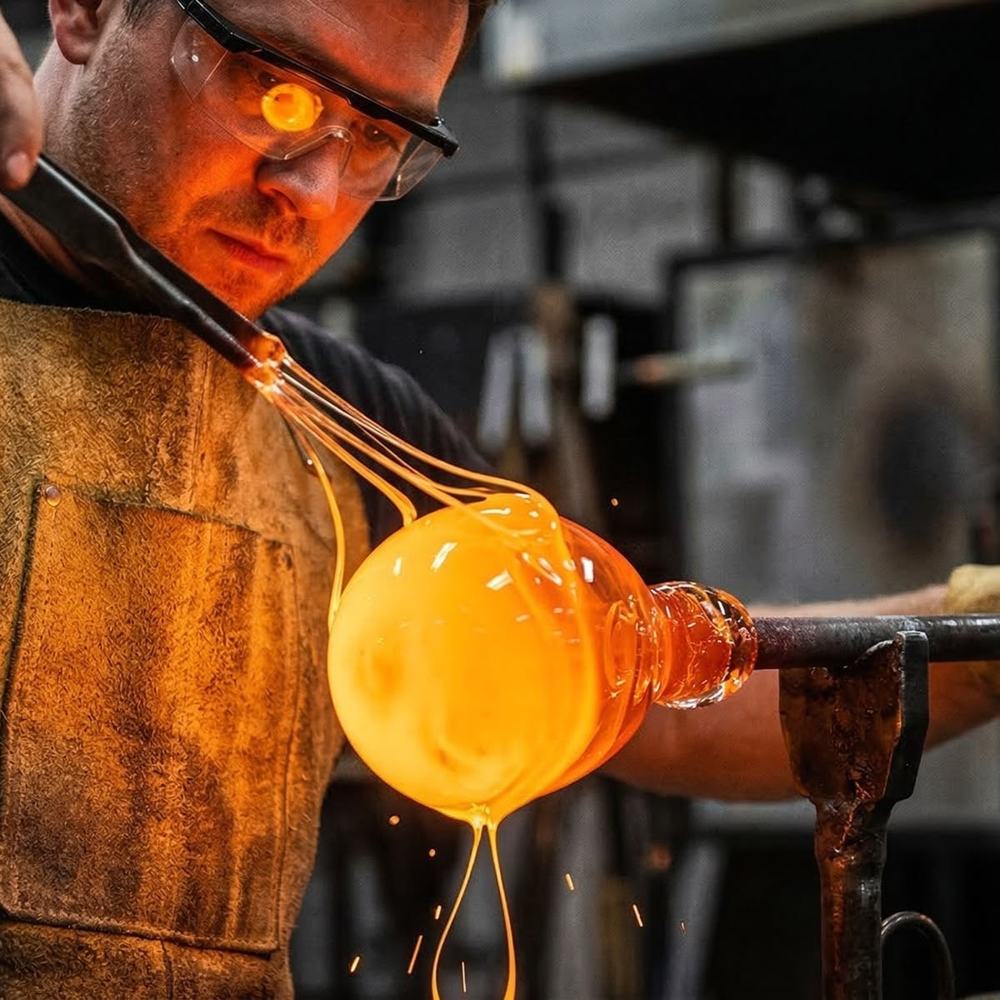
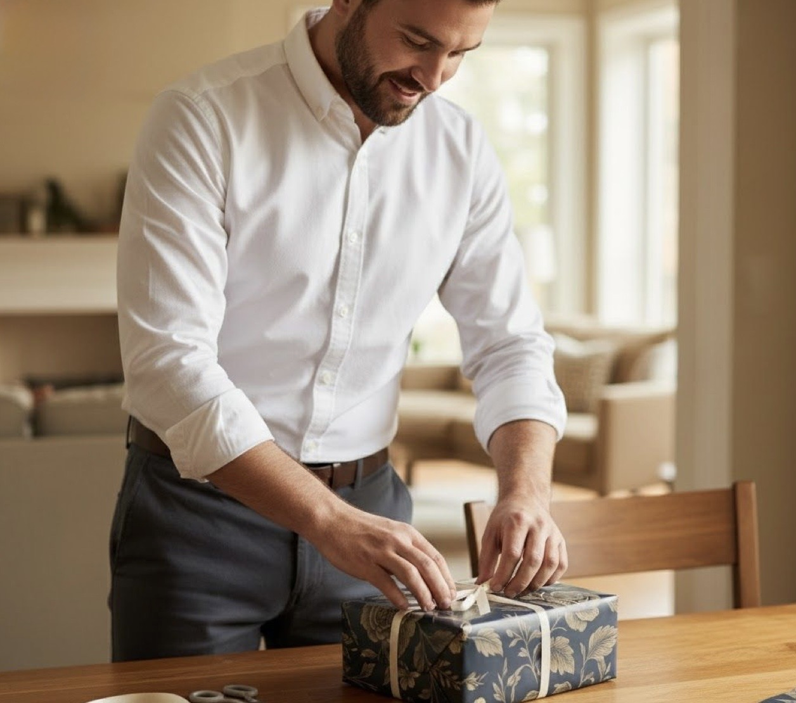

Место, где рождается волшебство, которое живёт в вашей семье десятилетиями
«Каждая игрушка — это обещание: волшебство не исчезнет, пока мы передаём его дальше»
Мы создаём ёлочные украшения, которые становятся частью семейной истории. Наша миссия — не просто производить игрушки, а хранить то особенное чувство, когда вся семья собирается у ёлки, а в воздухе пахнет мандаринами и ожиданием чуда.
Всё началось в 1987 году, когда бабушка Татьяна Юрьевна расписала первый стеклянный шар для внучки. Соседи просили «ещё одну такую» — и так на кухне в Уфе появилась маленькая мастерская. Сегодня The Keepers of Christmas Magic — это фабрика, где работают 40 мастеров, но дух остался прежним: каждая игрушка делается так, будто её вешают на ёлку ваших правнуков. Мы по-прежнему храним тот самый первый шар в музее фабрики — напоминание о том, с чего всё началось.
За каждой игрушкой стоят мастера, для которых Новый год — не сезон, а призвание.
Основательница
Внучка Татьяны Юрьевны. 30 лет в ремесле. Следит, чтобы каждая игрушка несла в себе душу семейной традиции.

Главный мастер-стеклодув
Выдувает формы для игрушек по старинным технологиям. Его руки создали более 50 000 уникальных заготовок.
Художник-росписчик
Расписывает каждую игрушку вручную. Специализируется на зимних пейзажах и семейных сюжетах.

Мастер упаковки
Упаковывает каждую игрушку так, чтобы распаковка стала маленьким праздником. Разработал фирменную коробку с историей бренда.